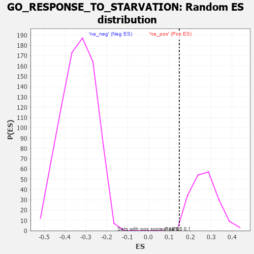

| | | Dataset | 7d |
| Phenotype | NoPhenotypeAvailable |
| Upregulated in class | na_pos |
| GeneSet | GO_RESPONSE_TO_STARVATION |
| Enrichment Score (ES) | 0.14731805 |
| Normalized Enrichment Score (NES) | 0.5492507 |
| Nominal p-value | 1.0 |
| FDR q-value | 0.9932668 |
| FWER p-Value | 1.0 |
Table: GSEA Results Summary
 Fig 1: Enrichment plot: GO_RESPONSE_TO_STARVATION
Fig 1: Enrichment plot: GO_RESPONSE_TO_STARVATION
Profile of the Running ES Score & Positions of GeneSet Members on the Rank Ordered List
| PROBE | GENE SYMBOL | GENE_TITLE | RANK IN GENE LIST | RANK METRIC SCORE | RUNNING ES | CORE ENRICHMENT | | 1 | ULK1 | | | 272 | 0.875 | 0.0165 | Yes |
| 2 | RRP8 | | | 403 | 0.699 | 0.0407 | Yes |
| 3 | WRN | | | 469 | 0.649 | 0.0703 | Yes |
| 4 | MYOD1 | | | 504 | 0.628 | 0.1025 | Yes |
| 5 | TFEB | | | 839 | 0.522 | 0.0906 | Yes |
| 6 | FOXK2 | | | 1081 | 0.467 | 0.0874 | Yes |
| 7 | KPTN | | | 1341 | 0.422 | 0.0792 | Yes |
| 8 | EIF2A | | | 1366 | 0.416 | 0.1003 | Yes |
| 9 | GPT | | | 1488 | 0.392 | 0.1078 | Yes |
| 10 | INHBB | | | 1514 | 0.388 | 0.1272 | Yes |
| 11 | NPRL3 | | | 1592 | 0.375 | 0.1394 | Yes |
| 12 | FNIP1 | | | 1798 | 0.338 | 0.1331 | Yes |
| 13 | FOXK1 | | | 1859 | 0.326 | 0.1445 | Yes |
| 14 | BRSK2 | | | 1979 | 0.308 | 0.1473 | Yes |
| 15 | NPRL2 | | | 2184 | 0.278 | 0.1377 | No |
| 16 | BCAS3 | | | 2352 | 0.253 | 0.1314 | No |
| 17 | WIPI2 | | | 2618 | 0.210 | 0.1101 | No |
| 18 | GNPAT | | | 2629 | 0.208 | 0.1209 | No |
| 19 | PCK2 | | | 2823 | 0.180 | 0.1070 | No |
| 20 | BECN1 | | | 2828 | 0.179 | 0.1170 | No |
| 21 | WNT4 | | | 3023 | 0.146 | 0.1009 | No |
| 22 | FADS1 | | | 3242 | 0.114 | 0.0801 | No |
| 23 | MAPK3 | | | 3589 | 0.062 | 0.0400 | No |
| 24 | CBL | | | 3621 | 0.056 | 0.0393 | No |
| 25 | WDR59 | | | 3692 | 0.045 | 0.0331 | No |
| 26 | GCN1 | | | 3923 | 0.006 | 0.0044 | No |
| 27 | ATG5 | | | 4051 | -0.016 | -0.0108 | No |
| 28 | MTOR | | | 4114 | -0.025 | -0.0172 | No |
| 29 | HMGCL | | | 4141 | -0.031 | -0.0186 | No |
| 30 | TBL2 | | | 4175 | -0.038 | -0.0206 | No |
| 31 | RRAGD | | | 4183 | -0.039 | -0.0192 | No |
| 32 | SESN1 | | | 4192 | -0.041 | -0.0179 | No |
| 33 | RRAGA | | | 4223 | -0.046 | -0.0190 | No |
| 34 | LRP11 | | | 4250 | -0.050 | -0.0194 | No |
| 35 | RPTOR | | | 4252 | -0.050 | -0.0166 | No |
| 36 | LRRK2 | | | 4467 | -0.087 | -0.0385 | No |
| 37 | ITFG2 | | | 4796 | -0.156 | -0.0708 | No |
| 38 | PPM1D | | | 4805 | -0.158 | -0.0626 | No |
| 39 | SIK2 | | | 4875 | -0.172 | -0.0614 | No |
| 40 | AOC1 | | | 4993 | -0.197 | -0.0647 | No |
| 41 | FLCN | | | 5140 | -0.235 | -0.0695 | No |
| 42 | PICK1 | | | 5265 | -0.263 | -0.0698 | No |
| 43 | WDR24 | | | 5568 | -0.338 | -0.0883 | No |
| 44 | LARP1 | | | 5616 | -0.349 | -0.0739 | No |
| 45 | DAP | | | 5732 | -0.386 | -0.0660 | No |
| 46 | MTMR3 | | | 5809 | -0.408 | -0.0518 | No |
| 47 | ATG7 | | | 5858 | -0.420 | -0.0334 | No |
| 48 | SZT2 | | | 5882 | -0.429 | -0.0114 | No |
| 49 | XBP1 | | | 6011 | -0.475 | 0.0001 | No |
| 50 | XPR1 | | | 6250 | -0.555 | 0.0023 | No |
| 51 | RALB | | | 6399 | -0.617 | 0.0195 | No |
| 52 | STK24 | | | 6550 | -0.684 | 0.0403 | No |
| 53 | VPS41 | | | 6850 | -0.841 | 0.0515 | No |
| 54 | ASNS | | | 7595 | -1.547 | 0.0475 | No |
Table: GSEA details [plain text format]

Fig 2: GO_RESPONSE_TO_STARVATION: Random ES distribution
Gene set null distribution of ES for GO_RESPONSE_TO_STARVATION